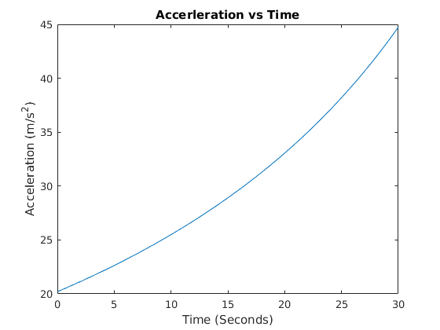
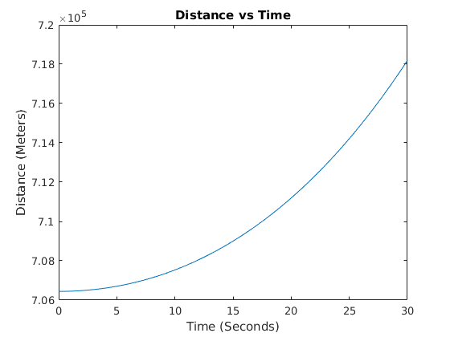
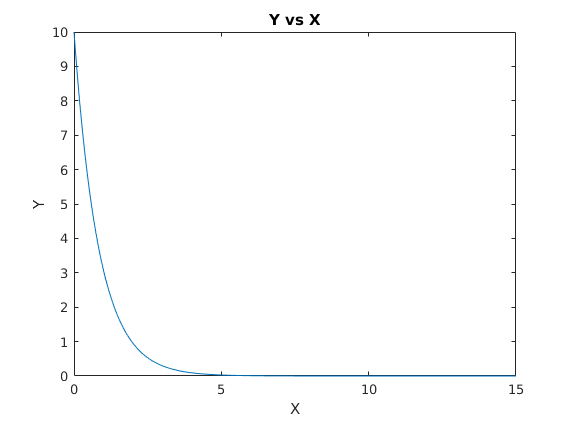

Contents
clear all
clc
Question #1
syms x
f = (3*x^4 * cos(7*x))/(12*x^2 -17*x)
df = diff(f)
answer = double(subs(df,x,2.7));
fprintf('\nThe Derivative of f(x) at x = 2.7 is %g\n',answer)
f =
-(3*x^4*cos(7*x))/(- 12*x^2 + 17*x)
df =
(21*x^4*sin(7*x))/(- 12*x^2 + 17*x) - (12*x^3*cos(7*x))/(- 12*x^2 + 17*x) - (3*x^4*cos(7*x)*(24*x - 17))/(17*x - 12*x^2)^2
The Derivative of f(x) at x = 2.7 is -0.0824027
Question #2
syms t
v = 2000*log((14*10^4)/(14*10^4 - 2100*t)) - 9.8*t
a = diff(v)
aAnswer = double(subs(a,t,16))
fprintf('\nThe Acceleration at t = 16 seconds is %gm/s^2\n',aAnswer)
tt = [0:0.1:30];
aa = subs(a,t,tt);
figure(1)
plot(tt,aa)
title('Accerleration vs Time')
xlabel('Time (Seconds)')
ylabel('Acceleration (m/s^2)')
d = int(v,t)
cAnswer = double(subs(d,t,30) - subs(d,t,0))
fprintf('\nThe rocket travels %gm in 30 seconds\n',cAnswer)
dd = subs(d,t,tt);
figure(2)
plot(tt,dd)
title('Distance vs Time')
xlabel('Time (Seconds)')
ylabel('Distance (Meters)')
v =
2000*log(-140000/(2100*t - 140000)) - (49*t)/5
a =
- (588000000000*((3*t)/200 - 1))/(2100*t - 140000)^2 - 49/5
aAnswer =
29.6737
The Acceleration at t = 16 seconds is 29.6737m/s^2
d =
2000*t - (400000*log(1/(3*t - 200)))/3 + 2000*t*log(-200/(3*t - 200)) - (49*t^2)/10
cAnswer =
1.1749e+04
The rocket travels 11748.6m in 30 seconds
Warning: Imaginary parts of complex X and/or Y arguments ignored
 
Question #3
eqn = '5 * Dy + 6 * y = exp(-1*x)'
IC = 'y(0) = 10'
soln = dsolve(eqn,IC,'x')
bAnswer = double(subs(soln,x,12))
xx = [0:0.01:15];
yy = subs(soln,x,xx);
figure(3)
plot(xx,yy)
title('Y vs X')
xlabel('X')
ylabel('Y')
eqn =
5 * Dy + 6 * y = exp(-1*x)
IC =
y(0) = 10
soln =
9*exp(-(6*x)/5) + exp(x/5)*exp(-(6*x)/5)
bAnswer =
1.1161e-05
